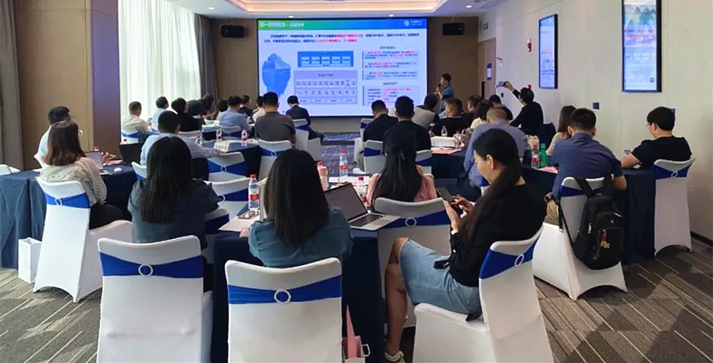

展会 | 赋能通信应用实践 万里受邀光合组织通信大数据生态闭门会
近日，由光合组织主办的“光合组织通信行业大数据生态伙伴闭门研讨会”在长沙圆满举行。中国信通院、中国移动信息技术中心等单位领导参加此次会议，并对当前通信行业的大数据发展趋势、学术研究和新型基础设施支撑应用的成果经验作出重要分享。
万里数据库作为国产软硬件生态中的重要一员，与中移苏研、中移杭研、亚信科技、南大通用、东方国信、宝兰德、新大陆、年华数据、上下文等十几家通信行业大数据合作伙伴专家受邀出席本次会议，共同围绕基础设施对大数据应用的安全、生态、性能需求及相应的技术发展等内容展开研讨。与此同时，万里数据库的生态专家对公司在通信行业的技术及项目应用实践进行了专业解读，阐述了万里的核心数据库产品赋能通信行业的数字化转型之路。
会议现场

万里数据库生态专家提及，2020年开始，公司先后与中国移动、中国联通等头部通信行业运营商达成了战略合作，共同推动通信行业的大数据业务及生态发展。
2020年7月，万里数据库成功中标中移动自主可控OLTP数据库联合创新项目，在分布式数据库标包中标份额达60%，且目前已在某省智慧中台项目、某北方大省数据中台等项目完成上线。（详见：重磅！万里开源中标中移动OLTP数据库联合创新项目 ）
2020年12月，公司中标2020-2021年联通沃音乐大数据服务项目，与联通沃音乐展开了一系列、多维度的深度战略合作：
2021年1月与联通沃音乐共建海纳数据智能联合研发实验室，荣获“2020年度优秀科技创新合作方”奖；
5月与联通沃音乐完成“云签约”，共建海纳数据智能技术服务平台，并成功签约成为其解决方案合作方；
在近期举办的2021年5G新文创产业峰会上，万里数据库与联通沃音乐联合研发的海纳数据智能平台uniBase正式对外发布，旨在面向新文创领域打造全流程场景的一站式数据技术服务与大数据解决方案，提供从数据库、数据治理、数据应用到运维的全流程一体化应用系统，可为运营商、新文创、政企、金融等行业提供定制化的数据智能解决方案。万里数据库也因此成为中国联通5G新文创产业联盟的首批成员单位，双方多措并举，共同迎接5G发展新机遇，开拓全国行业市场。
通信技术的快速发展，带动各行业数据呈指数级增长与积累，对基础设施的安全性、敏捷性以及生态的完善提出了更高的要求。《“十四五”规划建议》、《全国一体化大数据中心协同创新体系算力枢纽实施方案》均明确提出要建立数据资源安全保护基础制度和标准规范，保障数据安全，对我国大数据的发展提出了更高、更深刻的要求。
此次会议是光合组织联合通信行业各软硬件厂商构建通信大数据行业生态的重要一步。会后，产业链上下游将联合各行业专家及合作伙伴开展生态适配、产业融合工作，助力生态伙伴解决信息技术国产化的务实问题，推进产品、技术及联合解决方案在通信大数据行业的实践落地，努力打造服务、开放、共赢新生态。
万里数据库将在光合组织的带动下，协同行业内各生态伙伴在通信大数据行业继续开展技术攻坚及联合解决方案打造，积极开拓市场，加强产业联动，为产业走向安全化、高端化，实现可持续发展提供强有力的技术及生态支撑。
推荐阅读1.万里数据库与联通在线沃音乐携手 共建海纳数据智能联合研发实验室
2.万里开源与联通沃音乐完成“云签约”，共建5G数据智能技术服务平台
3. 同心共荣 智创未来——万里数据库亮相2021年5G新文创产业峰会


扫码二维码
关注公众号